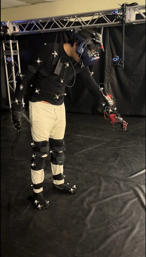
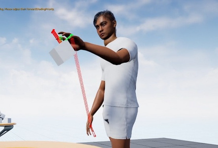
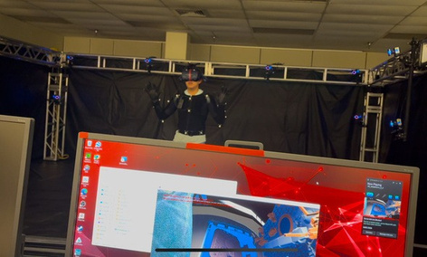

02 / XR + PHYSICAL COMPUTING
VR Haptic
Glove

A force-feedback glove prototype for making virtual objects feel present.
CONTEXTKennedy Space Center internship
ROLESoftware integration, interaction design, assembly
TOOLSESP32 · Unreal Engine · motion capture
THE BRIEF
I was tasked with rapidly designing and developing a haptic glove from scratch. The goal was an immersive VR system where a user could physically feel virtual objects and forces—not just see them.
HOW IT WORKS
- An ESP32 and sensor stack transmit hand and finger data into the VR system.
- Bidirectional force feedback communicates physical resistance back to the wearer.
- Marker-based motion capture tracks hand and finger positions.
- Unreal Engine interaction logic interprets gestures, grabs, and object manipulation.
MY FOCUS
I concentrated on the bridge between the physical glove and Unreal Engine: getting the data into the simulation, mapping it to interactions, and iterating on reliable gesture behavior. I also contributed to 3D modeling, hardware assembly, and real-time testing.
MORE IMAGES


